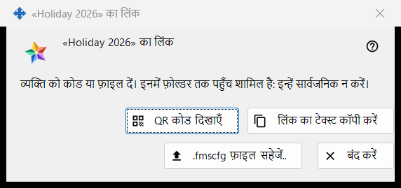
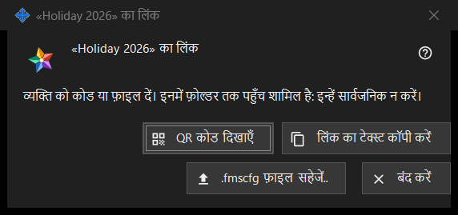

फ़ोल्डर के लिए लिंक
यह किस लिए है
किसी एक प्रकाशित फ़ोल्डर को ऐसे व्यक्ति तक पहुँचाता है जिसका एक्सचेंज सर्वर पर कोई खाता नहीं है: QR कोड, लिंक के टेक्स्ट और .fmscfg फ़ाइल के रूप में। यह विंडो एक्सचेंज खाते में मेरे साझा फ़ोल्डर समूह में लिंक बनाएँ.. या नया लिंक.. दबाने के बाद खुलती है, और फ़ोल्डर की बाहरी पहुंच दें.. विंडो में QR / कोड दिखाएँ.. से भी। मौजूदा प्रोग्राम में ये दोनों कमांड बंद हैं, क्योंकि खाते से बाहर के लोगों के लिए पहुँच उपलब्ध नहीं कराई जाती; यह पृष्ठ बताता है कि लिंक होने पर विंडो क्या दिखाती है।


इस क्रम में
- कोई प्रकाशित फ़ोल्डर चुनें और लिंक बनाएँ.. दबाएँ (पुराने लिंक को बदलने के लिए नया लिंक.. दबाएँ)।
- विंडो के ऊपर लिखा नोट पढ़ें।
- लिंक को इन बटनों में से किसी एक से दें: .fmscfg फ़ाइल सहेजें.., लिंक का टेक्स्ट कॉपी करें या QR कोड दिखाएँ।
- बंद करें दबाएँ।
तत्व
विंडो कब उपलब्ध है
विंडो केवल उस लिंक के लिए होती है जो अभी बनाया गया है या पहले से मौजूद है। जब तक खाते से बाहर के लोगों के लिए पहुँच उपलब्ध नहीं कराई जाती, लिंक बनाएँ.. और नया लिंक.. बंद रहते हैं, उनके नीचे का नोट कारण बताता है और विंडो नहीं खुलती; QR / कोड दिखाएँ.. भी बंद है। लिंक हटाएँ उपलब्ध रहता है।
ऊपर का नोट
नोट कहता है: व्यक्ति को कोड या फ़ाइल दें। इनमें फ़ोल्डर तक पहुँच शामिल है: इन्हें सार्वजनिक न करें। जिसके पास QR कोड, लिंक का टेक्स्ट या फ़ाइल है, वह उस फ़ोल्डर को खोल सकता है। लिंक का टेक्स्ट स्क्रीन पर कभी नहीं दिखाया जाता।
QR कोड दिखाएँ
QR कोड की तस्वीर को बड़ा करने वाली विंडो में खोलता है। बटन तभी दिखता है जब QR कोड बन सका हो; अगर लिंक का टेक्स्ट QR कोड के लिए बहुत बड़ा हो, तो जवाब मिलता है: कोड QR कोड के लिए बहुत बड़ा है - फ़ाइल का उपयोग करें।
लिंक का टेक्स्ट कॉपी करें
लिंक का टेक्स्ट (वह FMSSFTP2: से शुरू होता है) एक सुरक्षित रास्ते से क्लिपबोर्ड पर रखता है, जो उसे Windows की क्लिपबोर्ड हिस्ट्री और क्लाउड क्लिपबोर्ड से बाहर रखता है, और जवाब देता है: लिंक का टेक्स्ट कॉपी हो गया। बटन तभी दिखता है जब लिंक का टेक्स्ट मौजूद हो।
.fmscfg फ़ाइल सहेजें..
सिर्फ़ इसी एक फ़ोल्डर के लिए सेटिंग फ़ाइल सहेजता है, जिसे केवल उसका मालिक पढ़ सकता है। विंडो या तो पथ के साथ फ़ाइल सहेजी गई: बताती है, या फ़ाइल सहेजी नहीं जा सकी। बटन तभी दिखता है जब फ़ाइल बन सकी हो।
नया लिंक और लिंक हटाएँ
दोनों इस विंडो के नहीं, समूह के हैं, और दोनों पहले पूछते हैं (डिफ़ॉल्ट जवाब: नहीं): नया लिंक.. चेतावनी देता है कि पहले के सभी QR कोड और फ़ाइलें काम करना बंद कर देंगी, और लिंक हटाएँ चेतावनी देता है कि उसके साथ दिए गए सभी QR कोड और फ़ाइलें काम करना बंद कर देंगी।
बंद करें
विंडो बंद करता है और उससे लिंक का टेक्स्ट, फ़ाइल की सामग्री और QR की तस्वीर हटा देता है।
प्रबंधक सेटिंग · SFTP साझाकरण सेटिंग · एक्सचेंज सर्वर सेटिंग